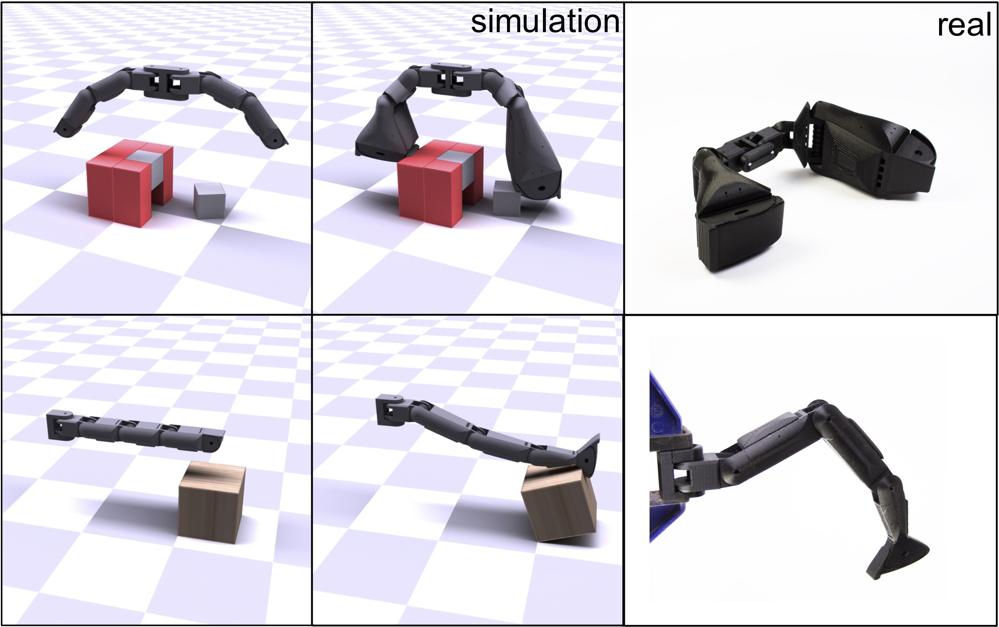
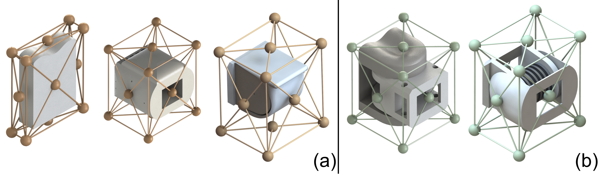
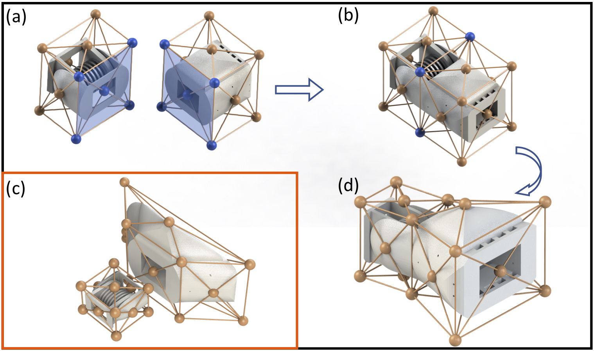
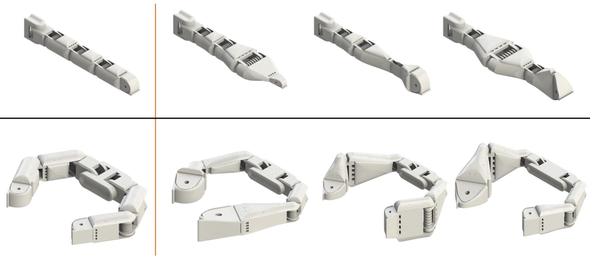
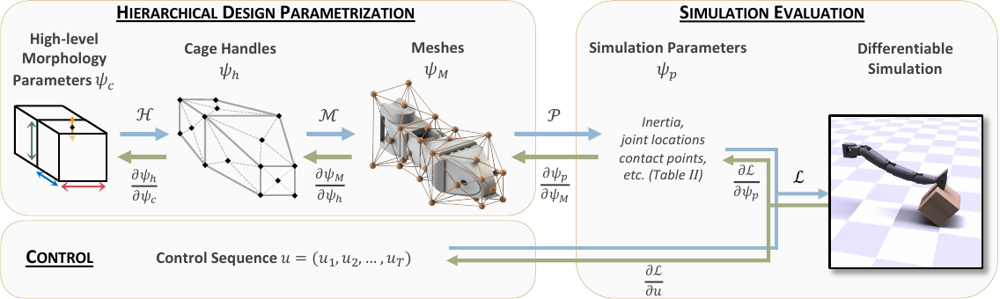
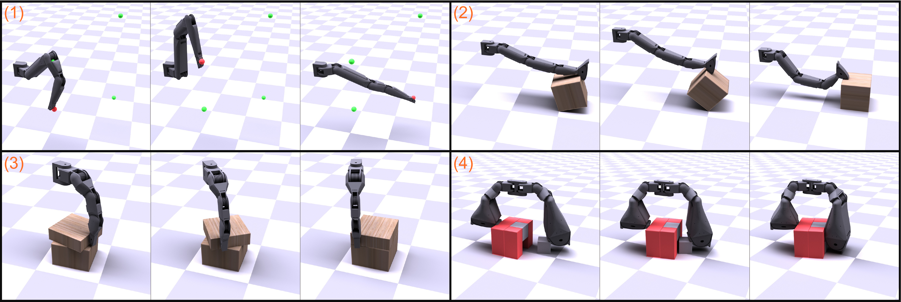
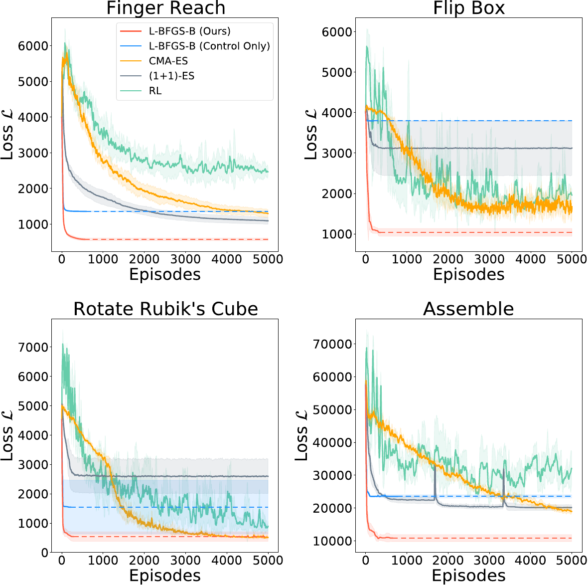

An interactive explainer
Differentiable Simulators: physics you can take the derivative of
A normal physics simulator answers one question: given this robot and these motor commands, what happens? A differentiable simulator answers a second, much more useful question: if I change the commands a little — or the friction, or the mass, or the shape of the fingertip — how would the outcome change? It hands you that answer as a derivative, for every input at once, for about the price of running the simulation twice. That single capability turns physics into something you can do gradient descent on, and it is the reason a growing list of simulators (Nimble, Dojo, Brax, MuJoCo MJX, NVIDIA Warp, Newton, and more) now advertise gradients as a headline feature. It also has a hard limit that took the field several years to state clearly: contact. Where objects touch, the physics stops being smooth, and the exact gradient of a simulator can be perfectly correct and completely useless at the same time. This post explains the machinery, the failure, and the fixes — then walks through one paper that pushed the idea somewhere surprising: differentiating with respect to the robot's own geometry, so a gradient step reshapes the hardware.

Start with what a gradient through physics buys you, because it is easy to underrate. In the middle column of that figure, a robot finger flips a heavy box. In the left column, the same optimizer with the same amount of compute fails, because the finger's shape was frozen at whatever a person drew. The hook in the middle column was found by writing down "how far did the box rotate", asking a physics simulator for the derivative of that number with respect to the positions of points on the fingertip surface, and stepping downhill.
To do that you need a simulator that will tell you a derivative. Most will not. A standard engine — Bullet, ODE, the original MuJoCo, PhysX — is a program that maps state and inputs to a new state. You can run it, and you can run it again with a slightly different input and compare, but it will not hand you $\partial(\text{outcome})/\partial(\text{input})$. Building an engine that does, and doing it fast and correctly, is a genuine research area with about a decade of history, several competing designs, and one shared enemy.
This post is mostly about that area. We will define what "differentiable simulator" means precisely, derive where the gradient comes from, look at the three families of implementation, spend real time on why contact is the hard case (with widgets you can break), survey what is available today, and only then use DiffHand as the worked example — because it is a good one: it needs derivatives with respect to something most simulators never expose.
1. What a differentiable simulator actually is
A simulator is a function that advances state by one small time step:
$$ x_{t+1} \;=\; f\big(x_t,\; u_t,\; \theta\big) $$
$x_t$ is the state at step $t$ — for a robot, all the joint angles and joint velocities, plus the position and velocity of every object it can touch. $u_t$ is the control input at step $t$, usually the motor torques. $\theta$ is everything else that the physics depends on but that does not change during the rollout: masses, inertias, friction coefficients, link lengths, contact stiffness, the shape of every surface. A whole episode is that one function applied over and over, $T$ times:
$$ x_T \;=\; f\big(\cdots f(f(x_0, u_0, \theta), u_1, \theta) \cdots , u_{T-1}, \theta\big) $$
Finally, you score the episode with a loss — a single number that says how badly it went:
$$ \Loss \;=\; \sum_{t=0}^{T} \ell\big(x_t, u_t\big) $$
where $\ell$ is a per-step cost, for example the squared distance from the object to where you wanted it, plus a small penalty on energy used. Nothing so far is unusual: every simulator computes this.
A simulator is differentiable when it will also give you
$$ \frac{\partial \Loss}{\partial u_{0:T-1}} \quad\text{and}\quad \frac{\partial \Loss}{\partial \theta} \quad\text{and}\quad \frac{\partial \Loss}{\partial x_0} $$
— that is, for every knob you could have turned, the direction and rate at which the score would have changed. Two things about this definition are worth stating plainly, because they are the source of most confusion in this area.
First: "differentiable" is a property of the implementation, not of physics. Newtonian mechanics is smooth almost everywhere. Whether you can get a derivative out depends on whether the code was written so that a derivative can be extracted, and on whether the specific numerical scheme used (especially for contact) is smooth. A simulator that solves contact by an if-statement — "are these two bodies touching? yes/no" — is a program with a jump in it, and the derivative on either side of the jump knows nothing about the jump.
Second: what makes it valuable is not that a derivative exists but that it is cheap. You can always estimate $\partial\Loss/\partial\theta$ without any special simulator, by finite differences: run the episode, nudge one parameter, run again, subtract. For $n$ parameters this costs about $2n$ episodes. A differentiable simulator gets the whole gradient — all $n$ numbers — for roughly the cost of two episodes, no matter how large $n$ is. That constant-versus-linear difference is the entire economic argument.
The comparison against reinforcement learning is the same argument in different clothes. A policy-gradient method treats the simulator as a black box and estimates the gradient from the correlation between random action noise and the resulting reward. That estimate is unbiased but noisy, and its noise grows with the number of parameters and the length of the episode. A differentiable simulator differentiates through the physics instead of around it, so the same information arrives without the sampling noise. When it works, it converges in tens of episodes where model-free methods need thousands. Section 11 covers when it does not work.
2. Where the gradient comes from
The rollout is a chain of functions, so the gradient is the chain rule applied along that chain. The only question is the order in which you multiply the terms, and that choice decides everything about the cost.
Write $A_t = \partial f/\partial x_t$ — the Jacobian of one simulation step with respect to the state, an $|x| \times |x|$ matrix — and $B_t = \partial f/\partial\theta$, the Jacobian of one step with respect to the parameters. The sensitivity of the final state to the parameters is a long product:
$$ \frac{\partial x_T}{\partial \theta} \;=\; \sum_{t=0}^{T-1} \Big( A_{T-1} A_{T-2} \cdots A_{t+1} \Big) B_t . $$
Read the two ways to evaluate this. Multiplying left to right means carrying an $|x|\times|\theta|$ matrix of sensitivities forward through time; this is forward mode, and its cost scales with the number of parameters $|\theta|$. Multiplying right to left means carrying a single vector backwards through time; this is reverse mode, also called the adjoint method, and its cost scales with the number of outputs, which is one, because the loss is one number.
Concretely, the adjoint method defines a vector $\lambda_t = \partial\Loss/\partial x_t$, the sensitivity of the final score to the state at step $t$. It is computed by a backward recursion:
$$ \lambda_T = \frac{\partial \ell}{\partial x_T}, \qquad \lambda_t = \frac{\partial \ell}{\partial x_t} + A_t^{\top}\, \lambda_{t+1}, $$
and the parameter gradient is accumulated as you sweep:
$$ \frac{\partial \Loss}{\partial \theta} \;=\; \sum_{t=0}^{T-1} B_t^{\top}\, \lambda_{t+1}, \qquad \frac{\partial \Loss}{\partial u_t} \;=\; \frac{\partial \ell}{\partial u_t} + \Big(\frac{\partial f}{\partial u_t}\Big)^{\!\top} \lambda_{t+1}. $$
Every symbol here is concrete. $\lambda_{t+1}$ is a vector the same size as the state. $A_t^\top \lambda_{t+1}$ is one matrix-vector product per time step, not a matrix-matrix product, which is why the whole backward sweep costs about as much as the forward one. The sum over $t$ is why you must keep something from each forward step: at minimum the state, and in practice also whatever the solver computed at that step.
The whole idea in one picture. A ball is launched with parameter $\theta$; the simulator steps it forward (orange), bounces it off the ground, and ends far from the target. The loss is the miss distance. The green arrows are the adjoint sweep: starting from $\lambda_T$ at the last state, it walks backwards along the same chain, multiplying by $A_t^\top$ at each step and accumulating $d\Loss/d\theta$ at the launch. One gradient step on $\theta$, re-run the same simulator, and the ball lands in the ring. The red circle marks the bounce — the one step in the chain where $A_t$ is not a nice smooth matrix. That is section 4.
What you have to store
The backward sweep needs $A_t$ at every step, and $A_t$ depends on the state at that step. So either you store every intermediate state — memory proportional to $T$ — or you recompute them. This is the same trade-off as backpropagation through a deep network, and the same fix applies: checkpointing, where you store the state every $k$ steps and re-run the forward pass in short bursts during the backward pass, trading a constant factor of extra compute for a factor of $k$ less memory. For a 600-step rollout with a few hundred state variables this is usually not a problem. For a 10,000-step deformable-body simulation with a million particles, it is the whole engineering problem.
Implicit integrators need one more idea
Good robot simulators do not use explicit time stepping, because contact forces are stiff and explicit schemes blow up unless the time step is tiny. They use implicit integration: the next state is defined as the solution of an equation in which it appears on both sides,
$$ g\big(x_{t+1};\, x_t, u_t, \theta\big) \;=\; 0, $$
solved numerically with Newton's method. There is no formula for $x_{t+1}$ to differentiate. The way out is the implicit function theorem: if $g$ is zero at the solution and its Jacobian in $x_{t+1}$ is invertible, then
$$ \frac{\partial x_{t+1}}{\partial \theta} \;=\; -\left(\frac{\partial g}{\partial x_{t+1}}\right)^{-1} \frac{\partial g}{\partial \theta}. $$
Read what that says operationally: you differentiate the equation the solver solved, not the iterations the solver took to solve it. That matters twice over. It is cheaper — the Newton solve at the last iteration already produced and factorized $\partial g/\partial x_{t+1}$, so the backward pass reuses that factorization instead of redoing work. And it is more accurate — differentiating the iterations gives you the derivative of your particular convergence path, complete with whatever error it stopped at, whereas implicit differentiation gives the derivative of the exact solution. Simulators that differentiate by naive automatic differentiation through the solver loop pay for every iteration; simulators built on the implicit function theorem do not.
3. Three ways to build one
Every differentiable simulator in existence uses one of three strategies, or a mix.
Route A — write the simulator in an autodiff framework
Express the physics in a language that already knows how to differentiate itself, and let the tool do the work. This is the oldest route: Degrave and colleagues did it in 2016 by writing a rigid-body engine as a Theano expression graph. It is also the most modern one: Brax (2021) and MuJoCo MJX write the physics in JAX, so gradients come from the same machinery that differentiates neural networks, and the whole rollout runs batched across thousands of parallel environments on a GPU or TPU. NVIDIA's Warp does the same for hand-written CUDA-style kernels.
Strengths: fast to build, easy to keep correct, and it composes with learned components — you can put a neural network inside the physics and differentiate through both. Weaknesses: memory, because the tape records everything; and cost through iterative solvers, since automatic differentiation dutifully differentiates every Newton iteration rather than the converged answer.
Route B — derive the adjoint by hand
Work out $A_t$, $B_t$ and the backward recursion analytically on paper, and implement them. This is what ADD (Geilinger et al., SIGGRAPH Asia 2020) does for articulated rigid bodies and deformables with frictional contact, and what DiffHand does on top of it. It is more work per feature — every new force model needs its derivative derived and coded — but it produces the fastest and most memory-frugal implementations, and it lets you choose exactly which quantities to expose. That last point is why DiffHand took this route: it needed derivatives with respect to contact point positions, which no autodiff tool would have given it for free because most simulators do not treat those as inputs at all.
Route C — implicitly differentiate the contact solve
Formulate contact as a mathematical program — a linear complementarity problem (LCP), a nonlinear one (NCP), or a convex cone program — solve it with a dedicated solver, and apply the implicit function theorem to the optimality conditions of that program. Nimble (Werling et al., RSS 2021) does this for an LCP formulation of hard inelastic contact, exploiting the sparsity of the LCP solution so the gradient is cheap. Dojo (Howell et al., 2022) does it for an NCP with second-order cone friction constraints, solved by a custom primal-dual interior-point method, and gets smooth gradient approximations out of the interior-point relaxation almost for free.
This route gives the most physically faithful contact — no spongy interpenetration — and exact derivatives of the solved problem. The cost is that the contact solver is now the centre of the engine, and everything else has to be arranged around it.
4. The hard part: contact
Everything above works cleanly for a swinging arm in free space. Robots that do useful work touch things, and touching is where the mathematics turns hostile. There are three separate problems, and they are often mixed up.
Problem 1: the physics is not smooth
Contact introduces genuine non-smoothness. The normal force is zero when the gap is positive and jumps to whatever is needed when the gap closes. Friction has two regimes — sticking and sliding — with a kink between them. An impact changes velocity discontinuously. None of these are artifacts of a numerical method; they are what the standard rigid-body model of contact says happens.
The consequence for optimization is that the loss as a function of your parameters has flat regions, kinks, and outright jumps. In a flat region the gradient is zero and tells you nothing. At a jump the gradient does not exist, and whatever number the code returns describes only the side you happen to be standing on. This is not a bug you can fix by being more careful with your derivatives — a perfectly exact gradient of a flat function is still zero.
That widget contains the entire trade-off of the field. The exact model gives you the right answer and no way to find it. The softened model gives you a signal you can descend, and a slightly wrong answer. The design of a differentiable contact model is the design of that compromise. Three families are in use.
Contact model family 1: penalty and compliant contact
Allow the bodies to overlap slightly, and push them apart with a force proportional to the overlap depth $d$: $f_n = k\,d$ for $d > 0$, where $k$ is a stiffness constant. This is a smooth function of position wherever $d>0$, so it differentiates cleanly. It is what ADD, DiffHand, and Brax's spring pipeline use.
The refinement that matters is mollification — deliberately smoothing the corner at $d = 0$. ADD's contribution is doing this in a principled way for both the normal and the tangential (friction) forces, so that the whole contact law is a smooth function rather than a piecewise one. The widget's $\varepsilon$ slider is exactly a mollification width: the softened force is $f_n = k\,\varepsilon \log\!\big(1 + e^{\,d/\varepsilon}\big)$, which equals $k\,d$ when the overlap is deep, tends to zero as the gap opens, and — crucially — is never exactly zero, so a gradient always exists.
DiffHand adds a second mollification of its own, on the damping term. Contact needs damping or bodies bounce forever. The original ADD damping force is proportional to the penetration speed, $\dot d\,\vn$, which has a jump at the instant of first touch: at that moment $d = 0$ but $\dot d \neq 0$, because the bodies are approaching at a finite speed, so the force leaps from nothing to something. Newton's method inside an implicit integrator fails on jumps. DiffHand makes the damping proportional to depth and speed,
$$ f_{\text{damp}} \;\propto\; d\,\dot d\,\vn, $$
which is zero at $d=0$ regardless of $\dot d$ and therefore grows continuously from the moment of contact. That is a one-symbol change that turned a diverging solver into a converging one.
Contact model family 2: complementarity
Model contact exactly, as a constraint: either the gap is zero and the force is positive, or the gap is positive and the force is zero, never both positive. Written down, that is $0 \le d \perp f_n \ge 0$, where $\perp$ means the product is zero. Collect all contacts and you get a complementarity problem — linear (LCP) if you approximate the friction cone by a polygon, nonlinear (NCP) if you keep the true cone. Nimble solves an LCP; Dojo solves an NCP with a second-order cone; MuJoCo uses a convex relaxation.
The gradient comes from implicitly differentiating the optimality conditions, and it is exact for the model. But the model itself is the non-smooth one, so you inherit the flat regions and the jumps. Dojo's answer is instructive: its interior-point solver never drives the complementarity all the way to zero, keeping a small relaxation parameter, and that relaxation acts as a built-in smoothing — you get an approximate gradient that is actually informative, with a knob controlling how approximate.
Problem 2: stiffness makes gradients explode
The backward recursion multiplies by $A_t^\top$ once per time step. If the physics is stiff — hard contact, high stiffness $k$ — then $A_t$ has large entries, and a product of $T$ of them can be astronomically large or vanishingly small. This is exactly the exploding and vanishing gradient problem of recurrent networks, arriving through physics instead of through weight matrices. Over a 1,000-step rollout with hard contact, the gradient you get back can be numeric nonsense even though every individual step was differentiated correctly.
Problem 3: chaos
Some physical systems are genuinely chaotic: two nearly identical initial states diverge exponentially. In such a system the true gradient over a long horizon is enormous and points in a direction that is meaningless beyond a few steps, because the loss surface at that scale is a fine-grained mess. A bouncing, colliding pile of objects gets there quickly. No amount of implementation quality helps; the gradient is correct and useless. The standard practical response is to shorten the horizon — differentiate through 30 steps, not 3,000, and use a learned value function to summarize the rest, which is what the SHAC method does.
5. Smoothing, and what it costs
All the fixes are versions of one idea: replace the sharp loss with a blurred one. Formally, instead of minimizing $\Loss(\theta)$, minimize
$$ \Loss_\sigma(\theta) \;=\; \mathbb{E}_{w \sim \mathcal{N}(0, \sigma^2 I)} \big[\Loss(\theta + w)\big], $$
the average of the loss over random nudges of size $\sigma$ around where you are standing. This function is smooth even when $\Loss$ is not, its gradient exists everywhere, and as $\sigma \to 0$ it converges back to the original. This is randomized smoothing, and it unifies several things that look different: mollified contact models smooth the physics directly; interior-point relaxation smooths the contact solve; adding action noise during training smooths the loss. They all target $\Loss_\sigma$ rather than $\Loss$.
Now the important question: how do you estimate $\nabla\Loss_\sigma$? There are two ways, and the difference between them is the single most useful thing to understand about differentiable simulators.
$$ \underbrace{\hat g_1 = \frac{1}{N}\sum_{i=1}^{N} \nabla\Loss(\theta + w_i)}_{\text{first order}} \qquad\qquad \underbrace{\hat g_0 = \frac{1}{N}\sum_{i=1}^{N} \frac{w_i}{\sigma^2}\,\Loss(\theta + w_i)}_{\text{zeroth order}} $$
The first-order estimator averages gradients, which is what a differentiable simulator makes possible. The zeroth-order estimator averages loss values weighted by the noise that produced them, which is what an evolution strategy or a policy gradient method computes and which needs no derivatives at all. Both are estimates of the same quantity, $\nabla\Loss_\sigma$. They differ in two ways that matter enormously.
Variance. When the loss is smooth, the first-order estimator has far lower variance — every sample contributes a full direction rather than one scalar comparison — so it converges in far fewer samples. This is the good case, and it is the usual argument for differentiable simulation.
Bias. When the loss has a jump, the first-order estimator is biased, and not slightly. A gradient evaluated at a sample point measures the slope where that sample landed. It cannot see a cliff that it did not land on. The zeroth-order estimator compares loss values across samples, so a sample that lands on the far side of a cliff reports a completely different number and the estimate moves. Suh, Simchowitz, Zhang and Tedrake proved this out in Do Differentiable Simulators Give Better Policy Gradients? (ICML 2022): first-order estimates win on Lipschitz-continuous systems with bounded gradients, and can lose badly on stiff, discontinuous, or chaotic ones. Their proposed remedy is an $\alpha$-order estimator that interpolates between the two, taking the efficiency of the first-order estimate where it is trustworthy and the robustness of the zeroth-order one where it is not.
Play with the sample count too. With $N$ small the zeroth-order arrow jumps around every time you redraw — that is its variance, and it is why model-free methods need thousands of episodes. The first-order arrow is steady, and steadily pointed at an answer that ignores the cliff. Neither is simply better. Knowing which failure you are facing is the skill.
6. The landscape: what exists today
Here is the field as of mid-2026, ordered by when each appeared. "Gradient route" refers to the three families in section 3.
| Simulator | Year | Physics | Gradient route | Contact model | Notes |
|---|---|---|---|---|---|
| Degrave et al. | 2016 | rigid bodies | A — autodiff (Theano) | spring / penalty | the first demonstration; a physics engine written as an expression graph |
| ChainQueen | 2019 | soft bodies (MLS-MPM) | A + B | particle-grid transfer | real-time differentiable soft robotics; ancestor of DiffTaichi |
| DiffTaichi | 2020 | 10 simulators: MPM, rigid, fluid, cloth | A — source-transform autodiff | varies by simulator | a language, not an engine; 188× faster than the same code in TensorFlow |
| ADD | 2020 | articulated rigid + deformable | B — analytic adjoint | mollified frictional penalty | introduced principled smoothing of normal and friction forces |
| Nimble | 2021 | articulated rigid | C — implicit diff of an LCP | hard LCP contact | exploits LCP sparsity; exact hard contact with analytic gradients |
| Brax | 2021 | rigid bodies | A — JAX autodiff | spring, positional, generalized | massively parallel on TPU/GPU; physics now folded into MuJoCo MJX |
| DiffHand | 2021 | articulated rigid + geometry | B — analytic adjoint | penalty with a signed distance field | gradients w.r.t. contact point positions; the example in section 8 |
| PlasticineLab | 2021 | elastoplastic material (MPM) | A — DiffTaichi | soft, no rigid contact | a benchmark of soft-body manipulation tasks with gradients |
| Dojo | 2022 | rigid bodies | C — implicit function theorem | NCP, second-order friction cone | interior-point relaxation doubles as smoothing; Julia with Python bindings |
| NVIDIA Warp | 2022 | rigid, cloth, particles, FEM | A — kernel-level autodiff | penalty / soft | write CUDA-style kernels in Python and get gradients; base layer for others |
| MuJoCo MJX | 2023 | articulated rigid | A — JAX autodiff | convex relaxation (CCP) | MuJoCo rewritten in JAX; gradients supported, best for small scenes |
| Genesis | 2024 | rigid, MPM, fluids, cloth | A — compiler autodiff + hand-written kernels | varies by solver | the MPM and tool solvers are differentiable; rigid-body gradients are still being added |
| MuJoCo Warp | 2025 | articulated rigid | — | convex relaxation | MuJoCo on Warp for large scenes; very fast, differentiability not yet available |
| Newton | 2025 | multi-solver, GPU | A — Warp | pluggable | Disney Research + Google DeepMind + NVIDIA, now under the Linux Foundation; built on Warp and OpenUSD with differentiable physics as a stated goal |
Years are first public release or publication. This is a selection, not a census — the soft-body, cloth, fluid and cutting literature each have their own differentiable engines.
How fast is fast?
Speed numbers in this area are hard to compare because they measure different things, but one set is worth quoting because it shows the range. A 2024 analytic-adjoint engine reports gradient computation times on an Apple M3 CPU of 4.1 microseconds for a UR5 arm, 14.7 microseconds for a half-cheetah, and 95.2 microseconds for a 36-degree-of-freedom humanoid, against about 1 millisecond for the half-cheetah in Nimble — roughly a hundredfold gap between implementations of the same idea, and 75 to 280 times faster than finite differences on the same systems. The lesson is not that one engine wins. It is that "differentiable" spans several orders of magnitude in cost, and the constant factor decides whether you can afford to use the gradient inside a training loop.
7. What people use them for
System identification
The most reliable use, and the one that works today with the least fuss. You have a real robot and a video or a log of it moving. You have a simulator whose parameters — masses, friction coefficients, motor constants, damping — you do not know exactly. Define the loss as the mismatch between simulated and recorded trajectories, and descend on the parameters. This is a small, static parameter vector and a short horizon, so none of the pathologies bite hard. It is the classic use of adjoint methods in engineering, decades older than the robotics work.
Trajectory optimization
Optimize the open-loop control sequence $u_{0:T-1}$ directly for one task from one initial state. This is what DiffHand does, and it is where gradients shine: hundreds of variables, one well-defined loss, no need to generalize. The output is a single motion, not a policy — change the starting conditions and you re-run the optimizer.
Policy learning
Replace the sampling-based gradient of reinforcement learning with the analytic one. This is the most attractive use and the most fragile, for all the reasons in sections 4 and 5. The methods that make it work do not differentiate through the whole episode: SHAC (Xu et al., ICML 2022 — same first author as DiffHand) differentiates through a short window of steps and uses a learned critic to stand in for everything after it, which keeps the gradient short enough to stay sane while still using first-order information. Others blend first- and zeroth-order estimates, as Suh et al. propose.
Design and co-design
Optimize the robot's physical parameters rather than its commands. Simple versions optimize link lengths or motor sizes. The hard version — optimizing shape, so that the geometry of contact changes — is what section 8 is about, and it needs derivatives that most simulators do not expose.
Soft bodies, cloth, and fluids
Deformable simulation is a natural fit, because there is no rigid contact discontinuity to fight: the material itself is the smoothing. ChainQueen, DiffTaichi and PlasticineLab all live here, and gradient-based control of deformables is noticeably more reliable than gradient-based control of rigid contact.
8. Worked example: differentiating the hardware
Now the example. An End-to-End Differentiable Framework for Contact-Aware Robot Design (Xu, Chen, Zlokapa, Foshey, Matusik, Sueda and Agrawal, RSS 2021) is a good case study because it pushes on the weakest point of the whole idea. Everything in sections 1 through 5 assumed that $\theta$ is a list of physical constants. DiffHand asks what happens when $\theta$ is the shape of the robot — and therefore, since contact happens on surfaces, when changing $\theta$ moves the very points where the physics is non-smooth.
Two problems have to be solved to make that work. First, you need a way to describe a complicated 3D shape with a handful of numbers, such that every setting of those numbers is a robot you could actually build, and such that the map from numbers to geometry is differentiable. Second, you need a simulator that reports derivatives with respect to geometry, not just controls.
Describing a shape with 9 numbers: cage-based deformation
The shape trick comes from computer graphics. Wrap the detailed mesh of a robot part inside a coarse closed surface called a cage, whose corners are called handles. Precompute, once, a set of weights $\vw$ for every point in the mesh such that the point is the weighted average of the handles:
$$ \tilde s \;=\; \sum_{j=1}^{|H|} \vw_j\, \tilde\psi_h(j) \qquad\text{with}\qquad \sum_{j=1}^{|H|} \vw_j = 1 , $$
where $j$ indexes the handles, $|H|$ is how many there are, $\tilde\psi_h(j) \in \mathbb{R}^3$ is handle $j$'s position in the original shape, and $\tilde s$ is the original position of the mesh point. Then at run time, move the handles to new positions $\psi_h$ and recompute the point with the same weights:
$$ s \;=\; \sum_{j=1}^{|H|} \vw_j\, \psi_h(j) . $$
That is the whole method, and it gives three things at once. It is a weighted average, so the map from handles to mesh is linear — fast to evaluate, and its derivative is the constant weight matrix, known in closed form with no run-time cost. It is smooth in space, so nearby mesh points always move to nearby places and local details keep their proportions. And it is low-dimensional: a mesh with thousands of vertices is driven by a dozen handles.
The specific weights are mean value coordinates. For a point $v$ inside a polygonal cage in two dimensions, with $\alpha_i$ the angle at $v$ subtended by the edge from handle $p_i$ to handle $p_{i+1}$:
$$ \hat w_i = \frac{\tan(\alpha_{i-1}/2) + \tan(\alpha_i/2)}{\lVert p_i - v\rVert}, \qquad \vw_i = \frac{\hat w_i}{\sum_k \hat w_k}. $$
Handles far from the point get small weights; handles whose edges fill more of the point's field of view get larger ones. The three-dimensional version replaces angles with solid angles. Precomputing costs $\mathcal{O}(|V|\cdot|H|)$ — one weight per vertex-handle pair — so a part with 3,000 vertices and 16 handles stores 48,000 numbers, once.
Keeping the robot in one piece
A robot is many parts bolted together, and if each cage moves independently the parts drift apart into a design nobody can build. Two constraints fix this.
The fabrication constraint gives different parts different freedom. A phalanx segment is 3D printed, so its handles may go anywhere. A joint houses a standard-size bearing and pin, so squashing it across the axis makes it useless; its cage may only stretch along the axis of rotation. This is encoded by driving each part's handles from a small set of allowed scale parameters rather than from free coordinates.
The connectivity constraint is the interesting one, and mean value coordinates solve it with a property that falls out of the formula. If a point lies exactly in the plane of a cage face, and inside that face's triangle $\langle H_1,H_2,H_3\rangle$, then
$$ \vw^{s}_i = \begin{cases} 0, & i \notin \{H_1,H_2,H_3\} \\[2pt] > 0, & i \in \{H_1,H_2,H_3\} \end{cases} $$
— a point on a face is controlled only by that face's handles, and by nothing else in the cage. So DiffHand builds every part's cage with a face coplanar with, and containing, the surface where that part bolts to its neighbour. The handles on that face are the connection handles, every connectable pair of parts is given identical connection handle layouts, and when two parts are joined their overlapping connection handles are merged into one shared variable. The two interface surfaces are then weighted averages of the same handles, so they move identically, for every value of the parameters, with no constraint solver and no penalty term. The constraint holds by construction.


The result of both constraints is a design vector $\psi_c$ of just 9 numbers for a single finger and 17 for a two-finger gripper, consisting of cage scale lengths and a few auxiliary offsets. Every setting inside its box of bounds is connected, manufacturable and simulatable — there is no such thing as an invalid design to reject or repair.

The simulator side: derivatives with respect to geometry
Now the part that connects back to sections 1 through 5. A simulator does not consume a mesh; it consumes physical quantities. DiffHand's third map, $\mathcal{P}$, converts mesh vertex positions into five simulation parameters: the joint transforms $E_j$ and body transforms $E_b$ (both in $\mathrm{SE}(3)$, meaning a rotation plus a translation), the generalized inertia $I$, the contact point positions $C_b$ expressed in each body's own frame, and the surface area $a$ associated with each contact point.
Changing the shape changes all five. A longer phalanx moves the next joint outward: that is $E_j$. A thicker one changes how hard it is to spin: that is $I$. Inertia is computed by fitting a cuboid to the deformed part, because a cuboid's inertia is a short closed-form expression in its side lengths — and because a 3D printed part has an internal infill pattern, so a mesh-exact inertia would not match the real object anyway.
The contact points are the clever bit. Before optimization, DiffHand samples points uniformly over each part's rest-shape surface. These are points inside the cage, so they have mean value coordinates just like mesh vertices, and they are carried along by the same weighted average. Stretch the fingertip and its candidate contact points stretch with it, with a derivative that is the same constant weight matrix. The contact area $a$, which scales how much friction force each point can carry, comes from the ratio of the cage's total surface area before and after deformation — a bigger pad grips harder.
On the physics side the simulator uses reduced coordinates — state is the joint angles, so joints are satisfied exactly and there are no constraint forces to differentiate — with BDF2 implicit integration (SDIRK2 for the first step, since BDF2 needs two past states), Newton's method with line search at each step, and the adjoint method of section 2 for gradients, reusing each step's final Newton factorization in a block banded triangular solve. Contact is the mollified penalty model of section 4, with a signed distance field attached to the manipulated object. Querying it at a contact point's world position returns the penetration distance $d$, penetration speed $\dot d$, contact normal $\vn$ and tangential velocity — and the derivatives of all four with respect to the robot's joint angles $q_b$, the object's coordinates $q_o$, and the contact point position $C_b$.
That last derivative is the one that does not exist in other simulators, and it is the one that says "this contact would have gone better if the fingertip surface were there instead of here". Two changes were needed to get it: extending ADD's contact model from one moving body against a static surface to two moving bodies, and the $d\,\dot d\,\vn$ damping fix from section 4.
The chain
Stack the three maps and you have the whole thing:
$$ \mathcal{F} = \mathcal{P} \circ \mathcal{M} \circ \mathcal{H}:\; \mathbb{R}^{m} \to \mathbb{R}^{|H|\times 3} \to \mathbb{R}^{|V|\times 3} \to \mathbb{R}^{p}, \qquad \psi_h = \mathcal{H}(\psi_c),\;\; \psi_M = \mathcal{M}(\psi_h),\;\; \psi_p = \mathcal{P}(\psi_M) $$
with $m$ the number of design numbers (9 or 17), $|H|$ the handle count, $|V|$ the mesh vertex count, and $p$ the number of simulation parameters (376 to 9,228 depending on the task). $\mathcal{H}$ is scaling, $\mathcal{M}$ is the weight matrix, $\mathcal{P}$ is closed-form geometry. All three are analytically differentiable, so
$$ \frac{d\psi_p}{d\psi_c} = \frac{d\psi_p}{d\psi_M}\frac{d\psi_M}{d\psi_h}\frac{d\psi_h}{d\psi_c}, \qquad \frac{d\Loss}{d\psi_c} = \frac{d\Loss}{d\psi_p}\,\frac{d\psi_p}{d\psi_c}. $$
Stack $d\Loss/d\psi_c$ and $d\Loss/du$ into one vector, hand it to L-BFGS-B — a quasi-Newton optimizer that builds a curvature estimate from past gradients and handles simple upper and lower bounds on variables, which is all the constraint structure this problem has — and you are doing gradient descent on a robot's body and brain at the same time.
DiffHand's loop. Blue: the forward chain from design numbers $\psi_c$ through handles, mesh and simulation parameters to the loss. With a flat fingertip the finger can only push, and the heavy box falls back. Green: the backward pass, which reaches all the way to the cage handles, so the tip grows a hook. Run the same controller again and the hook catches the far face. The thing that changed is the hardware.

9. Does it work?
Four contact-rich tasks. Finger Reach: touch four scattered targets in sequence with a wall-mounted finger that starts too short to reach two of them. Flip Box: rotate a heavy hinged box by 90 degrees using as little energy as possible. Rotate Rubik's Cube: turn the top layer of a fixed cube by 90 degrees, with a loss that deliberately gives almost no hint about where to push. Assemble: two fingers push a small cube into a nearly identically-sized hole in a mount that is free to slide away and is penalized for doing so.
Flip Box makes the losses concrete:
$$ \Loss = \sum_{t=1}^{T} c_u \lVert u_t\rVert^2 + c_{\text{touch}}\lVert p_t - p_{\text{touch}}\rVert^2 + c_{\text{flip}}\big\lVert \theta_t - \tfrac{\pi}{2}\big\rVert^2 $$
with $c_u = 5$, $c_{\text{flip}} = 50$, and $c_{\text{touch}} = 1$ for $t < T/2$ then $0$. Here $u_t \in [-1,1]$ is the control, $p_t$ the fingertip position, $p_{\text{touch}}$ a point on the box's back face, and $\theta_t$ the box's rotation angle. The touch term is a hint that only applies in the first half of the episode — get over to the far face early — after which the episode is judged purely on whether the box turned. The run is 150 steps at $\Delta t_s = 0.005$ s with a new control every 5 steps over 6 joint degrees of freedom, giving $|u| = 30 \times 6 = 180$ control numbers alongside the 9 shape numbers. Assemble is the largest: 500 steps at $\Delta t_s = 0.001$ s, control every 5 steps over 8 degrees of freedom, so $|u| = 100\times 8 = 800$, plus 17 shape numbers.
The baselines are two evolutionary strategies (CMA-ES and (1+1)-ES), the reinforcement learning co-optimization method of Luck et al. (soft actor-critic plus particle swarm), and — the ablation that matters — the identical method with the shape parameters frozen. All use the same shape parameterization; all were tuned; every method was run 5 times with different seeds.
| Method | Finger Reach | Flip Box | Rotate Rubik's Cube | Assemble |
|---|---|---|---|---|
| CMA-ES | 0.39 ± 0.02 | 0.00 ± 0.00 | 0.02 ± 0.01 | 0.28 ± 0.03 |
| (1+1)-ES | 0.35 ± 0.04 | 0.69 ± 0.39 | 0.87 ± 0.15 | 0.39 ± 0.09 |
| RL (Luck et al.) | 0.61 ± 0.05 | 0.41 ± 0.48 | 0.79 ± 0.31 | 0.91 ± 0.11 |
| L-BFGS-B, control only | 0.41 ± 0.00 | 1.00 ± 0.00 | 0.42 ± 0.39 | 0.77 ± 0.03 |
| L-BFGS-B, co-design | 0.17 ± 0.01 | 0.00 ± 0.00 | 0.07 ± 0.09 | 0.12 ± 0.11 |
Lower is better; normalized so 1.00 is the worst observed and 0.00 the best. Metrics are task-specific: time-averaged distance to targets; final angle error; final angle error; distance from the cube's center to the hole's center. Mean ± standard deviation over 5 seeds.
Flip Box is the cleanest ablation. Same optimizer, same simulator, same loss — the only difference is whether 9 numbers are allowed to move. Frozen, the method scores the worst possible value on all 5 seeds. Unfrozen, the best possible value on all 5. The optimized design explains why: a hook at the fingertip catches the box's back face and pulls, instead of trying to push a heavy object uphill. CMA-ES also reaches 0.00 here, which is worth saying plainly — this design space is small enough that random search can find the hook too, it just needs far more episodes.
Assemble is where the gradient's advantage is largest, and the only task where one method clearly succeeds. 17 shape numbers plus 800 control numbers is 817 dimensions, and sampling in 817 dimensions with a few thousand episodes is hopeless. The optimized gripper has fingers of different lengths — the long right finger pushes the cube while the short left one braces the mount so it does not slide — and both fingers are flat and wide, which spreads contact over more area and keeps the push stable. Overall the paper reports 10 to 30 times fewer simulated episodes than the sampling baselines.
Rotate Rubik's Cube is the honest loss. CMA-ES wins it at 0.02 against 0.07, and the paper's standard deviation of ±0.09 exceeds its mean, so at least one seed did badly. This is section 4 and 5 arriving on schedule: that task's loss deliberately gives no hint about where to make contact, so the surface near the start is flat, and a gradient method walks into a poor corner and stays. Wide sampling finds the right strategy more reliably. It is the price of following a slope.


Two details worth keeping
A contact curriculum. Assemble needed one extra idea, and it is a direct application of section 5. Contact makes the loss rough, so the paper scales the contact forces down by $0.01$ in a first optimization stage, $0.1$ in a second, and $1$ — the true value — in a third, moving on whenever L-BFGS-B converges. Weak contact means a smooth objective on which the optimizer can find approximately the right shape and motion; then the forces are restored and the solution is refined. This is smoothing by another name, applied as a schedule. Notably it did not help the baselines: given the same three-stage budget they could not solve even the easiest stage, so an easier warm-up gave them nothing and simply cost them two thirds of their episodes.
It survived contact with reality. Two optimized fingers were 3D printed on a Markforged printer in Onyx, a nylon filled with chopped carbon fiber, with almost no manual editing needed — the payoff of building the manufacturing constraints into the parameterization instead of checking them afterwards. The Flip Box finger was then tendon-driven with Vectran cables pulled by Dynamixel servos, mounted on a UR5 arm, and hand-programmed to follow waypoints from the optimized trajectory. It flipped the cube, and cubes of several other sizes the optimizer had never seen.
One more result worth a sentence, because it is about parameterization rather than physics. In a free-form grasping task the paper compared its cage handles (396 variables) against optimizing mesh vertex positions directly (8,946 variables) inside the same differentiable framework. The mesh version succeeded on 30 of 30 runs against 29 of 30, but the cage version reached a better average loss and produced smooth printable surfaces where the mesh version produced spikes and self-crossing triangles. A mesh vertex moved alone has no reason to stay near its neighbours; a cage handle drags a smooth neighbourhood with it.
10. When not to use one
It is worth writing the negative cases down explicitly, because enthusiasm in this area has outrun the evidence more than once.
- Long horizons with hard contact. Hundreds of stiff contact events multiply together in the backward recursion and the gradient becomes numerically meaningless. Shorten the window and use a learned critic for the tail, or fall back on sampling.
- Losses whose useful structure is a jump. If the good strategy is qualitatively different from your current one — grasp from the other side, re-orient before pushing — no local slope points at it. This is what widget 3 shows and what the Rubik's cube row measures.
- Chaotic contact piles. Many objects colliding is chaotic. The gradient is correct and describes a landscape too fine to descend.
- When the simulator is wrong in a way the gradient will exploit. A softened contact model that lets bodies sink into each other by a millimetre offers the optimizer free grip that does not exist in reality. Gradient-based optimizers are excellent at finding such gifts. The more you smooth, the more you should distrust the result.
- When you only have a handful of parameters. With 3 unknowns, finite differences costs 6 rollouts and needs no special engine. The gradient's advantage is a function of $n$; below some $n$ it is not worth the engineering.
The positive cases are equally clear: many parameters, short horizons, a smooth or smoothable loss, and a well-posed target — system identification, trajectory optimization, deformable manipulation, and design.
11. What it means
The general idea is small and keeps paying off: if you can differentiate it, you can optimize it directly instead of searching around it. Deep learning learned that lesson about function approximation twenty years ago. Differentiable simulation is the same lesson applied to physics, and the reason it took longer is that physics contains one operation that genuinely resists it — two surfaces meeting.
Most of the engineering in this area is downstream of that single problem. Penalty models, mollified friction, interior-point relaxations, contact curricula, randomized smoothing, short-horizon truncation, blended first- and zeroth-order estimators — all of them are negotiations with the fact that contact is not smooth and optimization wants it to be. There is no way around it, only a choice about how much bias to accept for how much signal.
What DiffHand adds to that story is a demonstration of how far the parameter vector can be stretched. Once the simulator reports derivatives with respect to where the contact points are, geometry becomes just another block of the gradient, and the boundary between "hardware" and "software" turns out to be a choice about where you put your variables rather than a fact about engineering. The hook on that fingertip is, formally, a learned parameter. It was found the same way a network weight is found: forward pass, loss, backward pass, step.
Open problems
- Contact that is both exact and differentiable. Every current answer trades one for the other. Dojo's relaxation and ADD's mollification are the best compromises so far, not solutions.
- Gradients that survive long rollouts. Truncation with a critic works but gives up the very thing that made the gradient attractive: knowing how a decision now affects an outcome much later.
- Local minima and exploration. The clearest open direction, named in DiffHand's own discussion: combine the wide search of sampling methods with the precision of gradients, rather than choosing one.
- Discrete structure. Continuous shape has a gradient; the number of fingers does not. Searching topology and geometry together needs an optimizer for mixed discrete-continuous spaces.
- The reality gap, differentiated. DiffHand's printed finger worked with a hand-programmed controller following optimized waypoints, not with the optimized torques replayed directly. Transferring both design and control automatically means the simulator's contact model has to be right, not just smooth.
The bottom line
A differentiable simulator is a physics engine that answers "what if" for every input at once, for about twice the cost of answering "what happens". That is a large enough win to have reorganized a corner of robotics around it — and small enough to disappear entirely the moment your loss develops a cliff. Learn where the cliffs are, smooth deliberately rather than by accident, and the gradient will reach places you would not have thought to look: including, apparently, the shape of a fingertip.